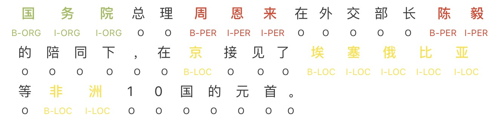
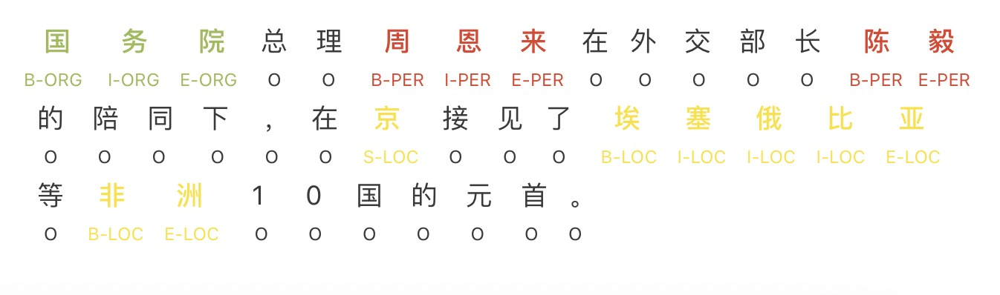

<!-- build time:Wed Feb 19 2020 00:55:54 GMT+0800 (China Standard Time) --><!DOCTYPE html><html><head><meta name="generator" content="Hexo 3.8.0"><meta charset="utf-8"><meta http-equiv="X-UA-Compatible" content="IE=edge,chrome=1"><meta name="viewport" content="width=device-width,initial-scale=1,maximum-scale=1,minimum-scale=1,user-scalable=no,minimal-ui"><meta name="renderer" content="webkit"><meta http-equiv="Cache-Control" content="no-transform"><meta http-equiv="Cache-Control" content="no-siteapp"><meta name="apple-mobile-web-app-capable" content="yes"><meta name="apple-mobile-web-app-status-bar-style" content="black"><meta name="format-detection" content="telephone=no,email=no,adress=no"><meta name="theme-color" content="#000000"><meta http-equiv="window-target" content="_top"><title>命名实体识别(Name Entity Recognition)综述 | Yu Li</title><meta name="description" content="命名实体识别识别对话里面的人名、地名、组织机构名。属于序列标注问题。 序列标注的几种模式在序列标注中，我们想对一个序列的每一个元素(token)标注一个标签。一般来说，一个序列指的是一个句子，而一个元素(token)指的是句子中的一个词语或者一个字。比如信息提取问题可以认为是一个序列标注问题，如提取出会议时间、地点等。不同的序列标注任务就是将目标句中的字或者词按照需求的方式标记，不同的结果取决于"><meta name="keywords" content="自然语言处理,NLP"><meta property="og:type" content="article"><meta property="og:title" content="命名实体识别(Name Entity Recognition)综述"><meta property="og:url" content="http://sthsf.github.io/2020/02/18/NLP--命名实体识别/index.html"><meta property="og:site_name" content="Yu Li&#39;s personal blog"><meta property="og:description" content="命名实体识别识别对话里面的人名、地名、组织机构名。属于序列标注问题。 序列标注的几种模式在序列标注中，我们想对一个序列的每一个元素(token)标注一个标签。一般来说，一个序列指的是一个句子，而一个元素(token)指的是句子中的一个词语或者一个字。比如信息提取问题可以认为是一个序列标注问题，如提取出会议时间、地点等。不同的序列标注任务就是将目标句中的字或者词按照需求的方式标记，不同的结果取决于"><meta property="og:locale" content="default"><meta property="og:image" content="http://sthsf.github.io/2020/02/18/NLP--命名实体识别/BIO.jpg"><meta property="og:image" content="http://sthsf.github.io/2020/02/18/NLP--命名实体识别/BIOES.jpg"><meta property="og:updated_time" content="2020-02-18T16:55:44.920Z"><meta name="twitter:card" content="summary"><meta name="twitter:title" content="命名实体识别(Name Entity Recognition)综述"><meta name="twitter:description" content="命名实体识别识别对话里面的人名、地名、组织机构名。属于序列标注问题。 序列标注的几种模式在序列标注中，我们想对一个序列的每一个元素(token)标注一个标签。一般来说，一个序列指的是一个句子，而一个元素(token)指的是句子中的一个词语或者一个字。比如信息提取问题可以认为是一个序列标注问题，如提取出会议时间、地点等。不同的序列标注任务就是将目标句中的字或者词按照需求的方式标记，不同的结果取决于"><meta name="twitter:image" content="http://sthsf.github.io/2020/02/18/NLP--命名实体识别/BIO.jpg"><link rel="canonical" href="http://sthsf.github.io/2020/02/18/NLP--命名实体识别/index.html"><link rel="icon" href="/favicon.png" type="image/x-icon"><link href="https://cdn.bootcss.com/font-awesome/4.7.0/css/font-awesome.min.css" rel="stylesheet"><link rel="stylesheet" href="/css/style.css"></head></html><body class="main-center" itemscope itemtype="http://schema.org/WebPage"><header class="header" itemscope itemtype="http://schema.org/WPHeader"><div class="slimContent"><div class="navbar-header"><div class="profile-block text-center"><a id="avatar" href="https://github.com/sthsf" target="_blank"></a><h2 id="name" class="hidden-xs hidden-sm">Yu Li</h2><h3 id="title" class="hidden-xs hidden-sm hidden-md">Algorithm Developer &amp; Designer</h3><small id="location" class="text-muted hidden-xs hidden-sm"><i class="fa fa-map-marker"></i> ShangHai, China</small></div><div class="search" id="search-form-wrap"><form class="search-form sidebar-form"><div class="input-group"><input type="text" class="search-form-input form-control" placeholder="Search"> <span class="input-group-btn"><button type="submit" class="search-form-submit btn btn-flat"><i class="fa fa-search"></i></button></span></div></form><div class="ins-search"><div class="ins-search-mask"></div><div class="ins-search-container"><div class="ins-input-wrapper"><input type="text" class="ins-search-input" placeholder="Type something..." x-webkit-speech> <button type="button" class="close ins-close ins-selectable" data-dismiss="modal" aria-label="Close"><span aria-hidden="true">×</span></button></div><div class="ins-section-wrapper"><div class="ins-section-container"></div></div></div></div></div><button class="navbar-toggle collapsed" type="button" data-toggle="collapse" data-target="#main-navbar" aria-controls="main-navbar" aria-expanded="false"><span class="sr-only">Toggle navigation</span> <span class="icon-bar"></span> <span class="icon-bar"></span> <span class="icon-bar"></span></button></div><nav id="main-navbar" class="collapse navbar-collapse" itemscope itemtype="http://schema.org/SiteNavigationElement" role="navigation"><ul class="nav navbar-nav main-nav"><li class="menu-item menu-item-about"><a href="/about"><i class="fa fa-fw fa-coffee"></i> <span class="menu-title">About</span></a></li><li class="menu-item menu-item-home"><a href="/."><i class="fa fa-fw fa-dashboard"></i> <span class="menu-title">Home</span></a></li><li class="menu-item menu-item-archives"><a href="/archives"><i class="fa fa-fw fa-delicious"></i> <span class="menu-title">Archives</span></a></li><li class="menu-item menu-item-categories"><a href="/categories"><i class="fa fa-fw fa-folder"></i> <span class="menu-title">Categories</span></a></li><li class="menu-item menu-item-tags"><a href="/tags"><i class="fa fa-fw fa-tags"></i> <span class="menu-title">Tags</span></a></li><li class="menu-item menu-item-repository"><a href="/repository"><i class="fa fa-fw fa-code"></i> <span class="menu-title">Repository</span></a></li><li class="menu-item menu-item-links"><a href="/links"><i class="fa fa-fw fa-gg"></i> <span class="menu-title">Links</span></a></li><li class="menu-item menu-item-books"><a href="/books"><i class="fa fa-fw fa-leanpub"></i> <span class="menu-title">Books</span></a></li></ul><ul class="social-links"><li><a href="https://github.com/sthsf" target="_blank" title="Github" data-toggle="tooltip" data-placement="top"><i class="fa fa-github"></i></a></li><li><a href="http://weibo.com/sthsf" target="_blank" title="Weibo" data-toggle="tooltip" data-placement="top"><i class="fa fa-weibo"></i></a></li><li><a href="https://twitter.com/iwebued" target="_blank" title="Twitter" data-toggle="tooltip" data-placement="top"><i class="fa fa-twitter"></i></a></li><li><a href="/atom.xml" target="_blank" title="Rss" data-toggle="tooltip" data-placement="top"><i class="fa fa-rss"></i></a></li></ul></nav></div></header><aside class="sidebar" itemscope itemtype="http://schema.org/WPSideBar"><div class="slimContent"><div class="widget"><h3 class="widget-title">Tags</h3><div class="widget-body"><ul class="tag-list"><li class="tag-list-item"><a class="tag-list-link" href="/tags/Blog/">Blog</a><span class="tag-list-count">1</span></li><li class="tag-list-item"><a class="tag-list-link" href="/tags/Deeplearning/">Deeplearning</a><span class="tag-list-count">1</span></li><li class="tag-list-item"><a class="tag-list-link" href="/tags/Hexo/">Hexo</a><span class="tag-list-count">1</span></li><li class="tag-list-item"><a class="tag-list-link" href="/tags/NLP/">NLP</a><span class="tag-list-count">1</span></li><li class="tag-list-item"><a class="tag-list-link" href="/tags/Tensorflow/">Tensorflow</a><span class="tag-list-count">4</span></li><li class="tag-list-item"><a class="tag-list-link" href="/tags/Tensorflow基础知识/">Tensorflow基础知识</a><span class="tag-list-count">3</span></li><li class="tag-list-item"><a class="tag-list-link" href="/tags/ValueError/">ValueError</a><span class="tag-list-count">1</span></li><li class="tag-list-item"><a class="tag-list-link" href="/tags/python/">python</a><span class="tag-list-count">1</span></li><li class="tag-list-item"><a class="tag-list-link" href="/tags/工具/">工具</a><span class="tag-list-count">1</span></li><li class="tag-list-item"><a class="tag-list-link" href="/tags/智能问答系统/">智能问答系统</a><span class="tag-list-count">1</span></li><li class="tag-list-item"><a class="tag-list-link" href="/tags/服务端/">服务端</a><span class="tag-list-count">1</span></li><li class="tag-list-item"><a class="tag-list-link" href="/tags/概率论/">概率论</a><span class="tag-list-count">1</span></li><li class="tag-list-item"><a class="tag-list-link" href="/tags/知识图谱/">知识图谱</a><span class="tag-list-count">1</span></li><li class="tag-list-item"><a class="tag-list-link" href="/tags/统计学习/">统计学习</a><span class="tag-list-count">1</span></li><li class="tag-list-item"><a class="tag-list-link" href="/tags/综述/">综述</a><span class="tag-list-count">2</span></li><li class="tag-list-item"><a class="tag-list-link" href="/tags/自然语言处理/">自然语言处理</a><span class="tag-list-count">1</span></li></ul></div></div><div class="widget"><h3 class="widget-title">Categories</h3><div class="widget-body"><ul class="category-list"><li class="category-list-item"><a class="category-list-link" href="/categories/Hexo/">Hexo</a><span class="category-list-count">1</span></li><li class="category-list-item"><a class="category-list-link" href="/categories/NLP/">NLP</a><span class="category-list-count">1</span></li><li class="category-list-item"><a class="category-list-link" href="/categories/Tensorflow/">Tensorflow</a><span class="category-list-count">1</span></li><li class="category-list-item"><a class="category-list-link" href="/categories/Tensorflow基础知识/">Tensorflow基础知识</a><span class="category-list-count">3</span></li><li class="category-list-item"><a class="category-list-link" href="/categories/github/">github</a><span class="category-list-count">1</span></li><li class="category-list-item"><a class="category-list-link" href="/categories/python基础知识/">python基础知识</a><span class="category-list-count">1</span></li><li class="category-list-item"><a class="category-list-link" href="/categories/智能问答系统/">智能问答系统</a><span class="category-list-count">1</span></li><li class="category-list-item"><a class="category-list-link" href="/categories/知识图谱/">知识图谱</a><span class="category-list-count">1</span></li><li class="category-list-item"><a class="category-list-link" href="/categories/统计学习/">统计学习</a><span class="category-list-count">1</span></li></ul></div></div><div class="widget"><h3 class="widget-title">Archive</h3><div class="widget-body"><ul class="archive-list"><li class="archive-list-item"><a class="archive-list-link" href="/archives/2020/02/">February 2020</a><span class="archive-list-count">2</span></li><li class="archive-list-item"><a class="archive-list-link" href="/archives/2019/08/">August 2019</a><span class="archive-list-count">1</span></li><li class="archive-list-item"><a class="archive-list-link" href="/archives/2019/03/">March 2019</a><span class="archive-list-count">2</span></li><li class="archive-list-item"><a class="archive-list-link" href="/archives/2017/09/">September 2017</a><span class="archive-list-count">2</span></li><li class="archive-list-item"><a class="archive-list-link" href="/archives/2017/08/">August 2017</a><span class="archive-list-count">2</span></li><li class="archive-list-item"><a class="archive-list-link" href="/archives/2017/06/">June 2017</a><span class="archive-list-count">1</span></li><li class="archive-list-item"><a class="archive-list-link" href="/archives/2017/03/">March 2017</a><span class="archive-list-count">1</span></li></ul></div></div><div class="widget"><h3 class="widget-title">Recent Posts</h3><div class="widget-body"><ul class="recent-post-list list-unstyled no-thumbnail"><li><div class="item-inner"><p class="item-category"><a class="category-link" href="/categories/NLP/">NLP</a></p><p class="item-title"><a href="/2020/02/18/NLP--命名实体识别/" class="title">命名实体识别(Name Entity Recognition)综述</a></p><p class="item-date"><time datetime="2020-02-18T07:37:46.000Z" itemprop="datePublished">2020-02-18</time></p></div></li><li><div class="item-inner"><p class="item-category"><a class="category-link" href="/categories/github/">github</a></p><p class="item-title"><a href="/2020/02/14/工具类介绍--github/" class="title">工具类介绍--github</a></p><p class="item-date"><time datetime="2020-02-14T02:09:46.000Z" itemprop="datePublished">2020-02-14</time></p></div></li><li><div class="item-inner"><p class="item-category"><a class="category-link" href="/categories/python基础知识/">python基础知识</a></p><p class="item-title"><a href="/2019/08/24/python基础知识--协程/" class="title">python与协程</a></p><p class="item-date"><time datetime="2019-08-24T02:09:46.000Z" itemprop="datePublished">2019-08-24</time></p></div></li><li><div class="item-inner"><p class="item-category"><a class="category-link" href="/categories/智能问答系统/">智能问答系统</a></p><p class="item-title"><a href="/2019/03/16/智能问答系统的探索和实践/" class="title">智能问答系统的探索和实践</a></p><p class="item-date"><time datetime="2019-03-16T02:09:46.000Z" itemprop="datePublished">2019-03-16</time></p></div></li><li><div class="item-inner"><p class="item-category"><a class="category-link" href="/categories/知识图谱/">知识图谱</a></p><p class="item-title"><a href="/2019/03/15/知识图谱的基础知识和应用场景/" class="title">知识图谱的基础知识和应用场景</a></p><p class="item-date"><time datetime="2019-03-15T02:09:46.000Z" itemprop="datePublished">2019-03-15</time></p></div></li></ul></div></div></div></aside><main class="main" role="main"><div class="content"><article id="post-NLP--命名实体识别" class="article article-type-post" itemscope itemtype="http://schema.org/BlogPosting"><div class="article-header"><h1 class="article-title" itemprop="name">命名实体识别(Name Entity Recognition)综述</h1><div class="article-meta"><span class="article-date"><i class="fa fa-calendar-check-o"></i> <a href="/2020/02/18/NLP--命名实体识别/" class="article-date"><time datetime="2020-02-18T07:37:46.000Z" itemprop="datePublished">2020-02-18</time></a></span> <span class="article-category"><i class="fa fa-folder"></i> <a class="article-category-link" href="/categories/NLP/">NLP</a></span> <span class="article-tag"><i class="fa fa-tag"></i> <a class="article-tag-link" href="/tags/NLP/">NLP</a>, <a class="article-tag-link" href="/tags/自然语言处理/">自然语言处理</a></span> <span class="article-read hidden-xs"><i class="fa fa-eye" aria-hidden="true"></i> <span id="busuanzi_container_page_pv">阅读<span id="busuanzi_value_page_pv">0</span>次</span></span> <span class="post-comment"><i class="fa fa-commenting-o"></i> <a href="/2020/02/18/NLP--命名实体识别/#comments" class="article-comment-link">Comments</a></span> <span class="post-wordcount hidden-xs" itemprop="wordCount">字数统计: 1,280(字)</span> <span class="post-readcount hidden-xs" itemprop="timeRequired">阅读时长: 5(分)</span></div></div><div class="article-entry markdown-body" itemprop="articleBody"><h1 id="命名实体识别"><a class="markdownIt-Anchor" href="#命名实体识别"></a> 命名实体识别</h1><p>识别对话里面的人名、地名、组织机构名。属于序列标注问题。</p><h2 id="序列标注的几种模式"><a class="markdownIt-Anchor" href="#序列标注的几种模式"></a> 序列标注的几种模式</h2><p>在序列标注中，我们想对一个序列的每一个元素(token)标注一个标签。一般来说，一个序列指的是一个句子，而一个元素(token)指的是句子中的一个词语或者一个字。比如信息提取问题可以认为是一个序列标注问题，如提取出会议时间、地点等。</p><p>不同的序列标注任务就是将目标句中的字或者词按照需求的方式标记，不同的结果取决于对样本数据的标注，一般序列的标注是要符合一定的标注标准的如(<a href="http://sighan.cs.uchicago.edu/bakeoff2005/data/pku_spec.pdf" target="_blank" rel="noopener">PKU数据标注规范</a>)。</p><p>词性标注、分词都属于同一类问题，他们的区别主要是标注的方式不同。</p><p>下面以命名实体识别来举例说明. 我们在进行命名实体识别时，通常对每个字进行标注。中文为单个字，英文为单词，空格分割。</p><p>标签类型的定义一般如下：</p><table><thead><tr><th style="text-align:center">定义</th><th style="text-align:left">全称</th><th>备注</th></tr></thead><tbody><tr><td style="text-align:center">B</td><td style="text-align:left">Begin</td><td>实体片段的开始</td></tr><tr><td style="text-align:center">I</td><td style="text-align:left">Intermediate</td><td>实体片段的中间</td></tr><tr><td style="text-align:center">E</td><td style="text-align:left">End</td><td>实体片段的结束</td></tr><tr><td style="text-align:center">S</td><td style="text-align:left">Single</td><td>单个字的实体</td></tr><tr><td style="text-align:center">O</td><td style="text-align:left">Other/Outside</td><td>其他不属于任何实体的字符(包括标点等)</td></tr></tbody></table><h3 id="常见的标签方案"><a class="markdownIt-Anchor" href="#常见的标签方案"></a> 常见的标签方案</h3><p>常用的较为流行的标签方案有如下几种：</p><ul><li><strong>IOB1</strong>: 标签I用于文本块中的字符，标签O用于文本块之外的字符，标签B用于在该文本块前面接续则一个同类型的文本块情况下的第一个字符。</li><li><strong>IOB2</strong>: 每个文本块都以标签B开始，除此之外，跟IOB1一样。</li><li><strong>IOE1</strong>: 标签I用于独立文本块中，标签E仅用于同类型文本块连续的情况，假如有两个同类型的文本块，那么标签E会被打在第一个文本块的最后一个字符。</li><li><strong>IOE2</strong>: 每个文本块都以标签E结尾，无论该文本块有多少个字符，除此之外，跟IOE1一样。</li><li><strong>START/END</strong> （也叫SBEIO、IOBES）: 包含了全部的5种标签，文本块由单个字符组成的时候，使用S标签来表示，由一个以上的字符组成时，首字符总是使用B标签，尾字符总是使用E标签，中间的字符使用I标签。</li><li><strong>IO</strong>: 只使用I和O标签，显然，如果文本中有连续的同种类型实体的文本块，使用该标签方案不能够区分这种情况。</li></ul><p>其中最常用的是IOB2、IOBS、IOBES。</p><h4 id="bio标注模式"><a class="markdownIt-Anchor" href="#bio标注模式"></a> BIO标注模式</h4><p>将每个元素标注为“B-X”、“I-X”或者“O”。其中，“B-X”表示此元素所在的片段属于X类型并且此元素在此片段的开头，“I-X”表示此元素所在的片段属于X类型并且此元素在此片段的中间位置，“O”表示不属于任何类型。</p><p>命名实体识别中每个token对应的标签集合如下:</p><figure class="highlight armasm"><table><tr><td class="gutter"><pre><span class="line">1</span><br></pre></td><td class="code"><pre><span class="line"><span class="symbol">LabelSet</span> = &#123;O, <span class="keyword">B-PER, </span>I-PER, <span class="keyword">B-LOC, </span>I-LOC, <span class="keyword">B-ORG, </span>I-ORG&#125;</span><br></pre></td></tr></table></figure><p>其中，PER代表人名， LOC代表位置， ORG代表组织. B-PER、I-PER代表人名首字、人名非首字，B-LOC、I-LOC代表地名(位置)首字、地名(位置)非首字，B-ORG、I-ORG代表组织机构名首字、组织机构名非首字，O代表该字不属于命名实体的一部分。</p><center></center><h4 id="bioes标注模式"><a class="markdownIt-Anchor" href="#bioes标注模式"></a> BIOES标注模式</h4><p>BIOES标注模式就是在BIO的基础上增加了单字符实体和字符结束标识, 即</p><figure class="highlight mipsasm"><table><tr><td class="gutter"><pre><span class="line">1</span><br></pre></td><td class="code"><pre><span class="line">LabelSet = &#123;O, <span class="keyword">B-PER, </span>I-PER, E-PER, S-PER, <span class="keyword">B-LOC, </span>I-LOC, E-LOC, S-LOC, <span class="keyword">B-ORG, </span>I-<span class="keyword">ORG, </span>E-<span class="keyword">ORG, </span>S-<span class="keyword">ORG&#125;</span></span><br></pre></td></tr></table></figure><center></center><h5 id="bioesm标注模式"><a class="markdownIt-Anchor" href="#bioesm标注模式"></a> BIOESM标注模式</h5><p>一般来说，NER的标注列表为[‘O’ ,‘B-MISC’, ‘I-MISC’, ‘B-ORG’ ,‘I-ORG’, ‘B-PER’ ,‘I-PER’, ‘B-LOC’ ,‘I-LOC’]。<br>其中，一般一共分为四大类：PER（人名），LOC（位置[地名]），ORG（组织）以及MISC(杂项)，而且B表示开始，I表示中间，O表示单字词。</p><ul><li><p>标注方式1:<br>LabelSet = {BA, MA, EA, BO, MO, EO, BP, MP, EP, O}<br>其中，BA代表这个汉字是地址首字，MA代表这个汉字是地址中间字，EA代表这个汉字是地址的尾字；BO代表这个汉字是机构名的首字，MO代表这个汉字是机构名称的中间字，EO代表这个汉字是机构名的尾字；BP代表这个汉字是人名首字，MP代表这个汉字是人名中间字，EP代表这个汉字是人名尾字，而O代表这个汉字不属于命名实体。</p></li><li><p>标注方式2:<br>LabelSet = {NA, SC, CC, SL, LL, SP, PP}<br>其中 NA = No entity, SC = Start Company, CC = Continue Company, SL = Start Location, CL = Continue Location, SP = Start Person, CP = Continue Person</p></li></ul><h1 id="基于字符的bilstm-crf模型"><a class="markdownIt-Anchor" href="#基于字符的bilstm-crf模型"></a> 基于字符的BiLSTM-CRF模型</h1><h1 id="參考文獻"><a class="markdownIt-Anchor" href="#參考文獻"></a> 參考文獻</h1><p><a href="https://blog.csdn.net/u011828281/article/details/81171066" target="_blank" rel="noopener">序列标注两种模式BIO和BIOES</a><br><a href="https://github.com/shiyybua/NER/blob/master/utils.py" target="_blank" rel="noopener">NER</a><br><a href="https://zhuanlan.zhihu.com/p/26782938" target="_blank" rel="noopener">基础却不简单，命名实体识别的难点与现状</a><br><a href="http://blog.csdn.net/jerr__y/article/details/73838805" target="_blank" rel="noopener">python+HMM之维特比解码</a><br><a href="http://www.cs.columbia.edu/~mcollins/hmms-spring2013.pdf" target="_blank" rel="noopener">Tagging Problems, and Hidden Markov Models</a><br><a href></a><br><a href></a><br><a href></a><br><a href></a></p></div><div class="article-footer"><blockquote class="mt-2x"><ul class="post-copyright list-unstyled"><li class="post-copyright-link hidden-xs"><strong>本文链接：</strong> <a href="http://sthsf.github.io/2020/02/18/NLP--命名实体识别/" title="命名实体识别(Name Entity Recognition)综述" target="_blank" rel="external">http://sthsf.github.io/2020/02/18/NLP--命名实体识别/</a></li><li class="post-copyright-license"><strong>版权声明： </strong>本博客所有文章除特别声明外，均采用 <a href="http://creativecommons.org/licenses/by/4.0/deed.zh" target="_blank" rel="external">CC BY 4.0 CN协议</a> 许可协议。转载请注明出处！</li></ul></blockquote><div class="panel panel-default panel-badger"><div class="panel-body"><figure class="media"><div class="media-left"><a href="https://github.com/sthsf" target="_blank" class="img-burn thumb-sm visible-lg"></a></div><div class="media-body"><h3 class="media-heading"><a href="https://github.com/sthsf" target="_blank"><span class="text-dark">Yu Li</span><small class="ml-1x">Algorithm Developer &amp; Designer</small></a></h3><div></div></div></figure></div></div></div></article><section id="comments"><div id="uyan_frame"></div></section></div><nav class="bar bar-footer clearfix" data-stick-bottom><div class="bar-inner"><ul class="pager pull-left"><li class="next"><a href="/2020/02/14/工具类介绍--github/" title="工具类介绍--github">Older&nbsp;&nbsp;<i class="fa fa-angle-right" aria-hidden="true"></i></a></li></ul><button type="button" class="btn btn-fancy btn-donate pop-onhover bg-gradient-warning hidden-xs" data-toggle="modal" data-target="#donateModal"><span>$</span></button><div class="bar-right"><div class="share-component" data-sites="weibo,qq,wechat,facebook,twitter, baidu" data-mobile-sites="weibo,qq,qzone"></div></div></div></nav><div class="modal modal-center modal-xs-full fade" id="donateModal" tabindex="-1" role="dialog"><div class="modal-dialog" role="document"><div class="modal-content"><button type="button" class="close" data-dismiss="modal" aria-label="Close"><span aria-hidden="true">&times;</span></button><div class="modal-body"><div class="donate-box"><div class="donate-tit"><p>Thank you for your support, I will continue to work hard!</p></div><div class="donate-payimg"></div><p class="text-muted mv">Scan this qrcode</p><div class="donate-payselect"><div class="pay_item checked" data-id="alipay" data-src="/images/donate/alipayimg.png"><div class="radio"><input type="radio" name="payment" id="input-alipay" value="alipay" checked><label class="pay_logo clickable" for="input-alipay"></label></div></div><div class="pay_item" data-id="weipay" data-src="/images/donate/weipayimg.png"><div class="radio"><input type="radio" name="payment" id="input-weipay" value="weipay"><label class="pay_logo clickable" for="input-weipay"></label></div></div></div><div class="text-grey"><p>Open<span id="donate-pay_txt">alipay</span>Scan this qrcode, you can sweep yards reward oh!</p></div></div></div></div></div></div></main><footer class="footer" itemscope itemtype="http://schema.org/WPFooter"><ul class="social-links"><li><a href="https://github.com/sthsf" target="_blank" title="Github" data-toggle="tooltip" data-placement="top"><i class="fa fa-github"></i></a></li><li><a href="http://weibo.com/sthsf" target="_blank" title="Weibo" data-toggle="tooltip" data-placement="top"><i class="fa fa-weibo"></i></a></li><li><a href="https://twitter.com/iwebued" target="_blank" title="Twitter" data-toggle="tooltip" data-placement="top"><i class="fa fa-twitter"></i></a></li><li><a href="/atom.xml" target="_blank" title="Rss" data-toggle="tooltip" data-placement="top"><i class="fa fa-rss"></i></a></li></ul><div class="copyright">&copy; 2020 Yu Li<div class="publishby">Theme by <a href="https://github.com/cofess" target="_blank">cofess </a>base on <a href="https://github.com/cofess/hexo-theme-pure" target="_blank">pure</a>.</div></div></footer><script src="https://cdn.bootcss.com/jquery/1.12.4/jquery.min.js"></script><script>window.jQuery||document.write('<script src="js/jquery.min.js"><\/script>')</script><script src="/js/plugin.js"></script><script src="/js/application.js"></script><script>!function(T){var n={TRANSLATION:{POSTS:"Posts",PAGES:"Pages",CATEGORIES:"Categories",TAGS:"Tags",UNTITLED:"(Untitled)"},ROOT_URL:"/",CONTENT_URL:"/content.json"};T.INSIGHT_CONFIG=n}(window)</script><script src="/js/insight.js"></script><script defer src="//dn-lbstatics.qbox.me/busuanzi/2.3/busuanzi.pure.mini.js"></script><script defer type="text/javascript" src="http://v2.uyan.cc/code/uyan.js?uid=[object Object]"></script><script defer>var _hmt=_hmt||[];!function(){var e=document.createElement("script");e.src="//hm.baidu.com/hm.js?f4564a0992521543e48ba54ba9be25a5";var t=document.getElementsByTagName("script")[0];t.parentNode.insertBefore(e,t)}()</script></body><!-- rebuild by neat -->